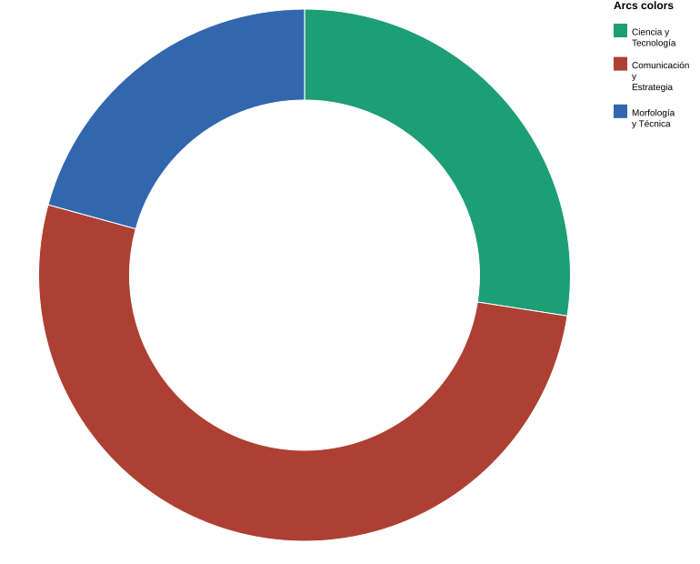
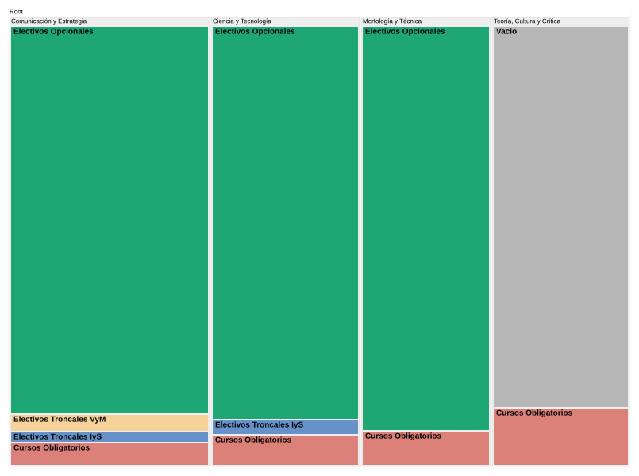

La carrera de Diseño UChile organiza su ciclo de especialización en tres grandes áreas de integración curricular: Comunicación y Gestión del Diseño, Ciencia y Tecnología y Morfología. Una cuarta área, Teoría, Cultura y Crítica, se desarrolla sólo mediante asignaturas obligatorias (D.U. Exento N°0053924, arts. 12 y 37). Entre 5° y 8° semestre, los estudiantes eligen electivos para profundizar en estas áreas según su mención: Industrial y Servicios o Visualidad y Medios. Pero la oferta no se distribuye de forma pareja (D.U. Exento N°0053924, arts. 6° y 7°)
¿Qué áreas de formación concentran una mayor o menor oferta de electivos?
Si bien los estudiantes pueden elegir entre distintas asignaturas durante su proceso de especialización, la oferta no se distribuye de manera uniforme entre las áreas de formación. El siguiente gráfico permite identificar cuáles concentran una mayor cantidad de cursos y cuáles cuentan con una presencia más limitada dentro de la malla curricular.

Los datos muestran una distribución desigual de la oferta académica entre las tres áreas de formación. La oferta de electivos se concentra principalmente en Comunicación y Gestión del Diseño, área que reúne 73 de las 172 asignaturas disponibles (42,4%). En segundo lugar se encuentra Ciencia y Tecnología con 53 cursos (30,8%), mientras que Morfología presenta la menor oferta con 46 asignaturas (26,7%).
Aunque las diferencias entre áreas no son problemáticas por sí mismas, el gráfico evidencia que las oportunidades de profundización no se distribuyen de forma equivalente. La menor presencia de Morfología es la que plantea más interrogantes: a diferencia de las otras áreas, no está asociada a una mención específica, lo que hace más difícil explicar su subrepresentación como una decisión curricular intencionada.
¿Cuáles son las áreas con mayor y menor presencia de electivos en cada mención?
La distribución global, sin embargo, oculta diferencias importantes. Al observar cada mención por separado —e incluir también los cursos obligatorios previos— aparece un perfil formativo distinto para cada trayectoria.
Los gráficos muestran que cada mención distribuye su oferta de asignaturas de acuerdo con énfasis formativos distintos. En Industrial y Servicios, la mayor concentración de cursos se encuentra en Ciencia y Tecnología, con 44 electivos, principalmente gracias a una amplia oferta de electivos propios de la mención. En Visualidad y Medios, en cambio, el área predominante es Comunicación y Gestión del Diseño, que reúne 62 electivos entre cursos exclusivos y abiertos a ambas menciones.
Estas diferencias responden a los perfiles específicos de cada trayectoria. Mientras Industrial y Servicios profundiza en aspectos tecnológicos y productivos, Visualidad y Medios fortalece competencias vinculadas a la comunicación, la gestión y el desarrollo estratégico de proyectos.
Sin embargo, la comparación también revela un patrón común. En ninguna de las dos menciones Morfología ocupa un lugar predominante dentro de la oferta académica. Su presencia se mantiene relativamente estable, con 32 asignaturas en Industrial y Servicios y 33 en Visualidad y Medios, pero siempre por debajo del área con mayor desarrollo en cada trayectoria.
¿Qué áreas de la malla curricular requieren fortalecimiento para garantizar una adecuada continuidad formativa?
Tener cursos disponibles no es lo mismo que tener continuidad formativa. El siguiente gráfico distingue entre obligatorios, electivos troncales y electivos opcionales para mostrar qué tan sostenida es la trayectoria que cada área puede ofrecer a lo largo de la carrera. (D.U. Exento N°0053924, art. 37)

A diferencia de los gráficos anteriores, esta visualización permite observar no solo cuántas asignaturas existen en cada área, sino también cómo se articulan dentro de la trayectoria formativa. Los resultados muestran que la continuidad curricular no se distribuye de manera homogénea entre las distintas áreas de formación.
Con cursos obligatorios, electivos troncales de ambas menciones y una amplia oferta opcional, Comunicación y Gestión del Diseño es el área con la trayectoria más consolidada. Esto permite que los estudiantes continúen desarrollando conocimientos en ella a lo largo de distintos momentos de la carrera.
Ciencia y Tecnología también ofrece continuidad, aunque de forma desigual entre las menciones. Mientras Industrial y Servicios cuenta con cursos troncales vinculados al área, Visualidad y Medios no. Como resultado, las oportunidades de profundización dependen, en este caso, de la trayectoria elegida por el estudiante.
La situación de Morfología es distinta. Aunque tiene una cantidad considerable de electivos opcionales, carece de asignaturas troncales que den continuidad a los aprendizajes desarrollados previamente. La profundización en esta área entonces depende casi exclusivamente de la elección individual de electivos durante el ciclo de especialización, sin una estructura curricular que la sostenga.
El caso más extremo es Teoría, Cultura y Crítica. A diferencia de las demás áreas , su presencia en la malla se agota en los cursos obligatorios: no hay electivos ni troncales que permitan continuar o profundizar los contenidos trabajados. La formación en esta área, en términos curriculares, simplemente termina.
En conjunto, los resultados muestran que las áreas no solo difieren en la cantidad de asignaturas disponibles, sino también en las oportunidades de continuidad que ofrecen. Mientras Comunicación y Gestión del Diseño cuenta con una estructura que favorece la profundización progresiva, Morfología y, especialmente, Teoría, Cultura y Crítica presentan vacíos que limitan el desarrollo sostenido de conocimientos dentro del ciclo de especialización.
Planifica tu trayectoria: electivos disponibles por área de formación
Conocer la distribución de la oferta es solo el primer paso. Lo que sigue depende de las decisiones de cada estudiante. La siguiente tabla reúne todos los electivos disponibles según área de integración curricular y mención, y permite identificar en qué áreas se está concentrando la propia trayectoria formativa. En un plan de estudios donde la continuidad no está garantizada para todas las áreas, saber dónde se está poniendo el foco puede ser tan importante como saber dónde están los vacíos.
Planificador
| Electivos |
|---|
| Troncal |
| Opcional |
Usa el botón + Agregar en el buscador. Arrastra los encabezados para reordenar.
| Mención | Área de Formación | Asignatura Electiva | Enfoque |
|---|
Malesuada aenean cras facilisi taciti lectus aptent dignissim dapibus lacus dictum quam tristique molestie euismod vel, nisl velit tellus fames himenaeos litora nostra pulvinar blandit odio facilisis libero urna vitae. Iaculis vivamus scelerisque in sodales sed netus pretium inceptos platea, commodo eros magnis ultricies nam hendrerit volutpat eu, suspendisse imperdiet litora senectus orci sociosqu mattis nullam.
Fuentes
Reglamento y Plan de Estudios de la Licenciatura en Diseño (D.U. Exento N°0053924, 20 de diciembre de 2018) , Catálogo de Electivos FAU 2026. , Fuente 3 , Fuente 4 y Fuente 5 . Consultados en 2026.